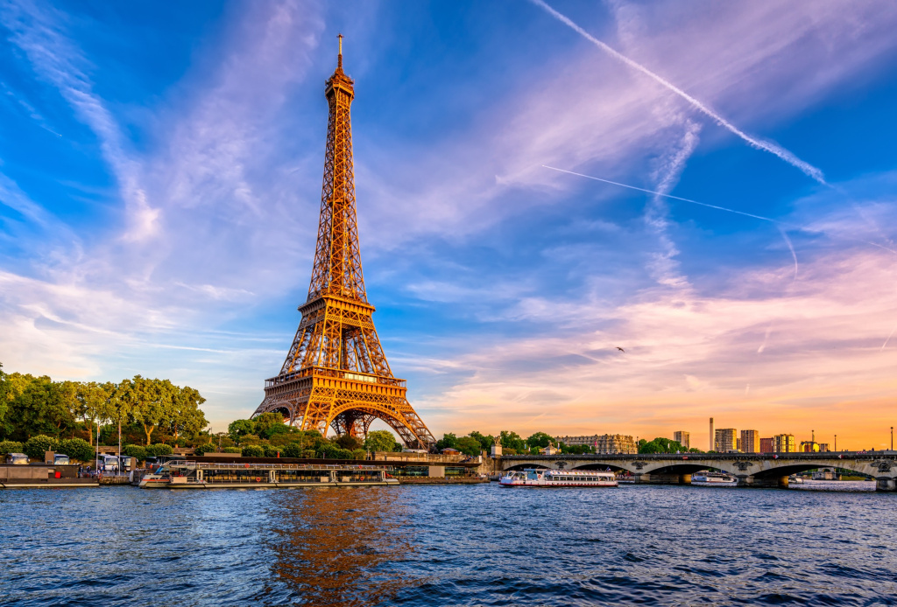

Париж

Париж - город любви и романтики, столица Франции.
Описание
Париж - это не просто город, а настоящий музей под открытым небом. Каждая улица здесь дышит историей и романтикой. Монмартр привлекает художников и богему, Латинский квартал полон студенческой жизни, а роскошные Елисейские поля олицетворяют шик французской столицы. В городе более 150 музеев, включая всемирно известный Лувр с Моной Лизой и музей Орсе с импрессионистами. Гастрономическая сцена Парижа включает как уютные бистро, так и рестораны высокой кухни с мишленовскими звездами.
Интересные факты
- Эйфелева башня была временной конструкцией и должна была простоять всего 20 лет
- В парижском Лувре хранится более 380,000 экспонатов
- Парижские катакомбы хранят останки более 6 миллионов человек
- В городе 37 мостов через Сену
- Парижское метро имеет 303 станции
Расположение на карте
Текущая погода
Загрузка погоды...